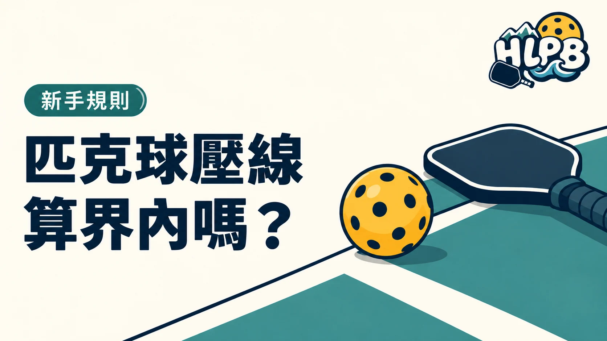

一般回球碰到界線算界內；發球碰到非截擊區線，是必須特別分清的例外。判斷時不能只問有沒有壓線，還要確認目前是不是發球，以及碰到哪一條線。
先分發球與一般回球
| 情況 | 判斷重點 |
|---|---|
| 一般回球碰到場地外框的界線 | 界內 |
| 發球碰到正確對角發球區的底線或邊線 | 不因碰線而出界 |
| 發球碰到正確發球區的中線 | 不因碰線而出界 |
| 發球碰到非截擊區線 | 發球失誤 |
表格中的發球都以正確斜對角發球區為前提。落到錯誤發球區，不能只因碰到某條線就當成有效發球。非截擊區線屬於非截擊區，因此發球落在這條線上，不能當作已越過該區。
沒看清楚，和確定出界不一樣
不能用懷疑取代看見。無裁判協助判線時，要依規則履行自己這側的判線責任，不能只因覺得球可能很長，就直接喊界外。對手移動或球速很快，也不是任意改變判線原則的理由。
不要把踩線與球碰線混在一起
球的落點判定與球員的腳步限制是兩件事。這篇談球落在哪裡；發球員站位、非截擊區踩線等問題，還要另外看動作與發生時機。先把問題分類，討論時才不會各自說不同的規則。
上場前可以先確認什麼？
HLPB 建議開打前辨認底線、邊線、中線與非截擊區線，並確認現場標線是否容易辨識。若場地有多種球類標線，先和同場球友確認採用哪一組線。這是溝通建議，不會改變正式場地的界內、界外定義。
資料來源：USA Pickleball 官方資料。規則整理依 2026 年版本；學習方法由 HLPB 編輯整理。
最後查證：2026-10-20｜資料來源：USA Pickleball 規則摘要
返回文章列表